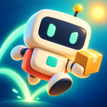

Lightning
An amber warning gives you 1.6 seconds. Spot the marked landing and get moving before the strike.
One parcel. No easy way.
A little robot. One precious parcel. A world of beautifully unreasonable ways to get there.
View on the App StoreiPhone & iPad · iOS 17+ · Free with optional purchases
 CATARACT PASS / PRO
CATARACT PASS / PRO01 / A bigger little world
From gentle treetops to storm-swept ridges. New 3D scenery gives every delivery somewhere worth getting lost in.

Find your rhythm above the treetops. A gentler Beginner route with bamboo, soft green hills and room to learn the arc.
Choose a world, or open a scene at full resolution.
02 / A little danger goes a long way
The route is only half the puzzle. Read the warning, choose your moment, then commit to the jump.
An amber warning gives you 1.6 seconds. Spot the marked landing and get moving before the strike.
Burning routes punish a pause. Step near a pressure mine and its two-second fuse starts counting.
Moving water can sweep you away. Catch a dry opening, or retreat to a high dock while the tide rises.
Watch the streamers. Gusts push your flight off line, and violet gravity blooms can turn a jump upside down.
03 / Find your next impossible
500 levels in each tier. Learn the feel in Beginner, then take on changing worlds, tighter landings and much less room for error.
Room to find your rhythm
500 levels · 50 original districts
The world pushes back
500 levels · 11 rotating challenge worlds
Precision is the whole point
500 levels · 11 rotating challenge worlds
Each tier keeps its own progress. Extra-assisted runs are unranked.
Simple to start. Satisfying to master.
Spot your next landing, watch the obstacles and decide where the parcel needs to go.
Drag to aim and release to launch. Prefer a different approach? Use the direction and power sliders.
Thread a ring, collect a pickup and get ready for the next jump. Every delivery is a little victory.
A few thoughtful touches
All bundled levels work without a connection. Online extras use their respective services.
Subtle ambience and surface-specific landings. No background music. Adjust sound in Settings.
Explore scenery and animated hazards in World Tour. Learn warning cues in the Field Guide.
Drag or slider aiming, adjustable haptics and support for Reduce Motion.
Yes. All bundled levels and free retries are available without buying anything. Optional purchases include gem packs, cosmetics, a starter pack and permanent removal of mandatory ads.
Ads may appear between eligible completed runs. Reward videos are optional. Permanent ad removal turns off mandatory ads, while optional reward offers can still be available.
Ordinary gameplay needs neither. Purchases, ads, cloud features and Game Center use an internet connection. Connecting a support Player ID is optional.
Bounce Courier is currently available on iPhone and iPad. An Android release is not available yet.

Your next delivery is waiting